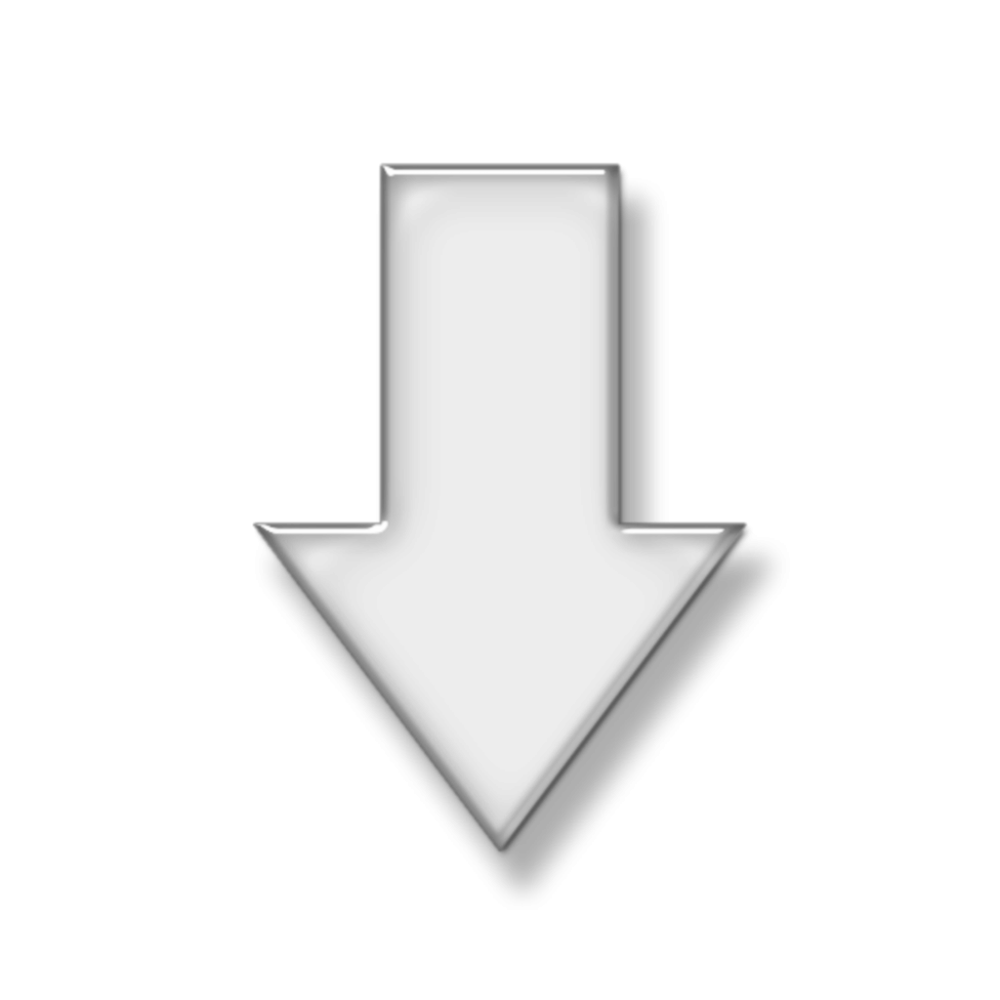
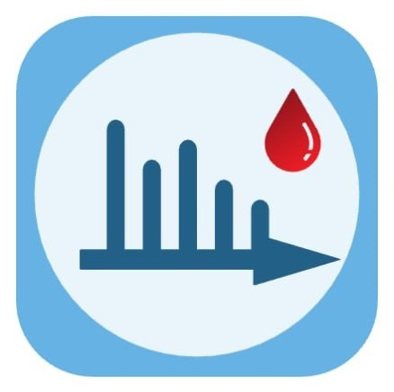

Цифровые проекты центра
Ниже представлен список ссылок для быстрого доступа ко всем проектам


Доклинические исследования
Веб-приложение для расчёта и статистической обработки фармакокинетических/фармакодинамических параметров в доклинических исследованиях лекарственных препаратов

Метабоскан
Уникальная скрининговая система диагностики патологии на основе метаболомного профиля
ЛИМС
Программное обеспечение, предназначенное для управления лабораторными проектами и документами в метаболомике
Предобработка инструментальных данных
Веб-приложение для предобработки и визуализации метаболомных данных
Обработка и анализ метаболомных данных
Описание 5